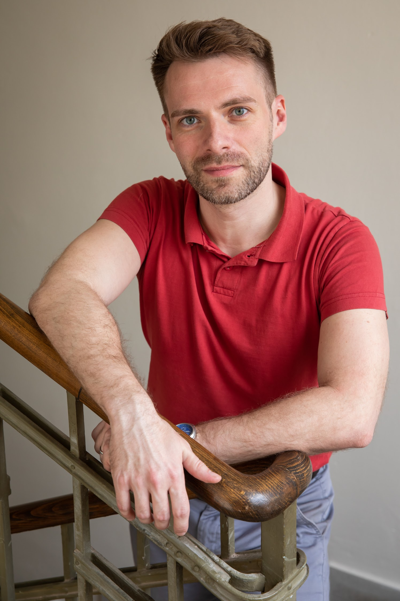
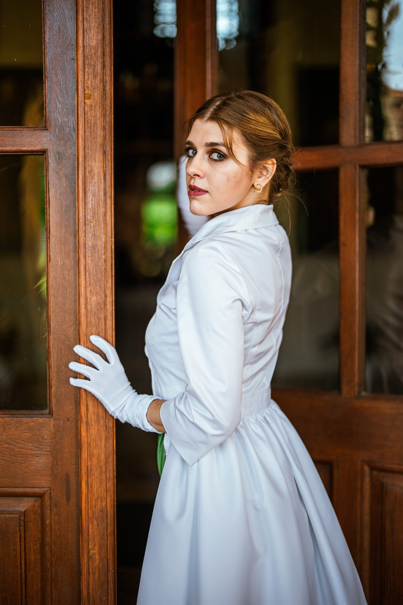
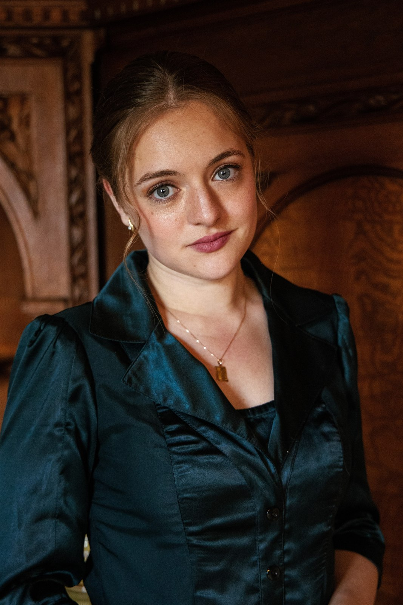
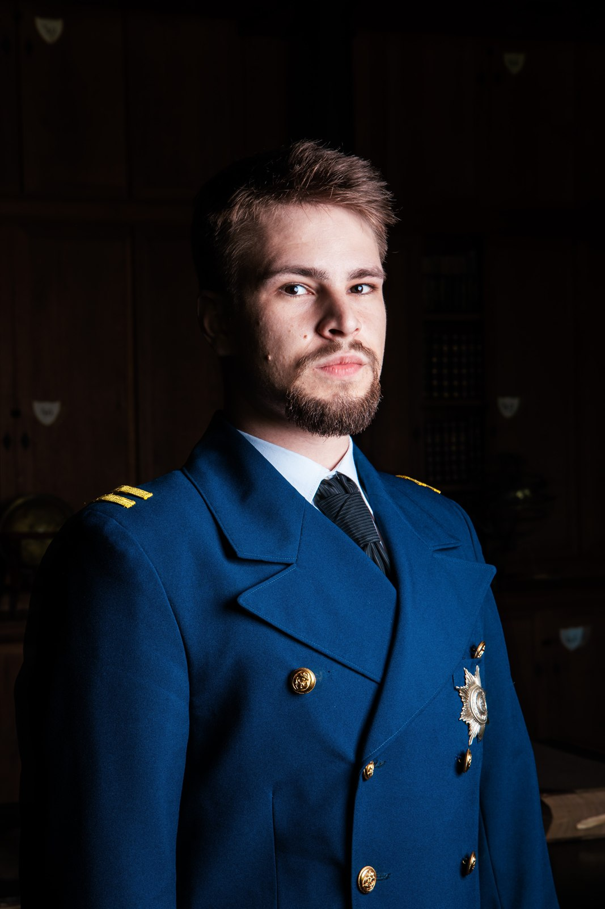
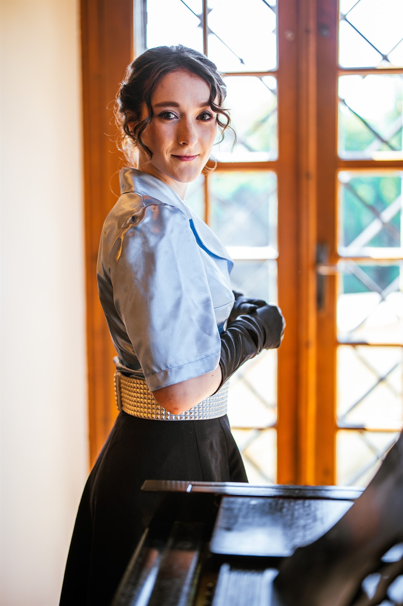
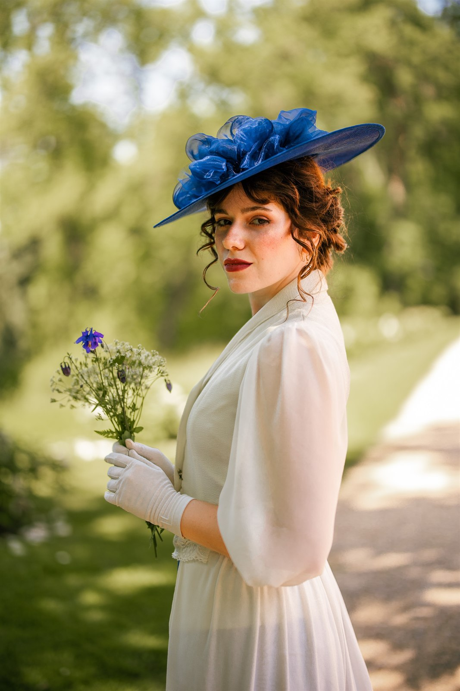
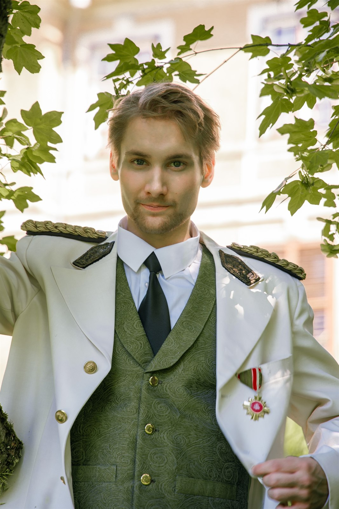
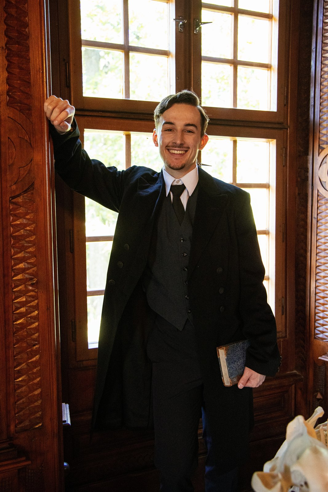
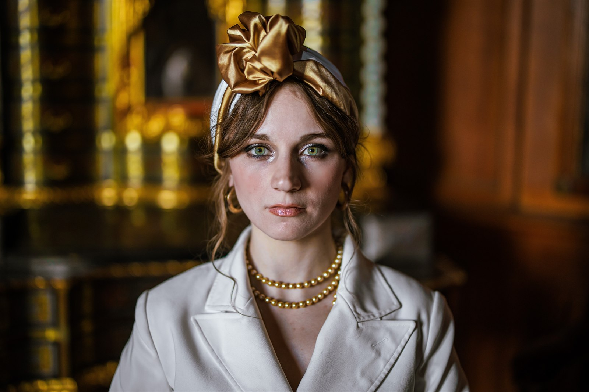

Medium · Historie
Lenka Potučková: Karolina, Charlotta, Dorothea Meineke – královna z Blanska
Příběh Karoliny Meineke, ženy, která se provinčně vymanila z dějinných rolí a přesto zůstala skrytou královnou v paměti Brna.
Číst článekAleš Kohout
Karolina Meineke
1768 – 1815 · tajná manželka britského krále Viléma IV.
Příběh
Tři místa, jeden osud a tajemství,
které anglická koruna pohřbila na dvě staletí.
O muzikálu
Synopsis
Příběh muzikálu je inspirován osudem Karoliny Meineke, rozené von Linsingen – tajné manželky britského krále Viléma IV., jejíž život byl v důsledku politických a mocenských rozhodnutí systematicky vytěsněn z oficiálních dějin.
Téma má výrazný regionální přesah: životní příběh Karoliny je úzce spjat s jihomoravským městem Blansko, kde část svého života prožila a kde také zemřela. Inscenace propojuje evropský historický kontext s konkrétním místem v České republice a pokouší se vrátit do kulturní paměti osobnost, která je s tímto regionem přímo spojena.
Výjimečnost projektu spočívá nejen v námětu, ale i ve formě. Nejedná se o klasický školní muzikál, nýbrž o stylizované hudebně-dramatické dílo s ambicí překračovat hranice žánru směrem k opeře.
„Hannover. Londýn. Morava. Tři místa, jeden osud a tajemství, které anglická koruna pohřbila na dvě staletí."
Pyrmont · 1791
Láska, kterou koruna nesměla uznat – a přesto ji dějiny nedokázaly umlčet.
Mladá Karolina von Linsingen a princ Vilém, vévoda z Clarence, syn britského krále Jiřího III. Tajná svatba v lesní kapli u Pyrmontu se stala začátkem osudu, který anglický dvůr na dvě století pohřbil.
Ze světa inscenace


01 / 12
Hudba
Originální muzikálová partitura, která dává hlas příběhu utajené královny. Pusťte si ukázku nebo celý playlist.
Autor
Aleš Kohout získal první divadelní zkušenosti v Uměleckém centru dětí a mládeže Květy Kimové. Po studiích muzikálového herectví v ateliéru docentky Sylvy Talpové na JAMU v Brně nastoupil jako sólista muzikálové scény Divadla J. K. Tyla v Plzni, kde během devíti sezón ztvárnil řadu výrazných rolí.
Patří mezi ně Molina v Polibku pavoučí ženy, Moritz Stiefel v Probuzení jara, Ren McCormack ve Footloose či Jerry alias Daphné v Někdo to rád horké.
V současnosti se naplno věnuje autorské a pedagogické činnosti. Společně se Sylvou Talpovou vede již třetí ateliér muzikálového herectví JAMU, od roku 2025 z pozice vedoucího.

Autorská díla · výběr
01
Anna Kareninová
Premiéra 2018 · Muzikálová opera
02
Frankenstein – skutečný příběh
Premiéra 2022 · Muzikálová opera
03
Metronom
Premiéra 2022 · Muzikál
04
Příběh utajené královny
Premiéra 2026 · Muzikálová opera
Forma díla
Příběh utajené královny pokračuje v rozvíjení formy muzikálové opery, kde se propojuje muzikálová a operní estetika.
Tým
Muzikál vznikl v Ateliéru muzikálového herectví Sylvy Talpové a Aleše Kohouta na Divadelní fakultě JAMU.
Autor, Režie
Aleš Kohout
Choreografie
Marcela Puldová
Dramaturgická spolupráce
Sylva Talpová
Světelný design
Tomáš Příkrý
Scénografie, Kostýmy
Aleš Kohout
Propagační materiály
Jan Šmach, Klára Prchalová
Fotografie
Lucie Všianská, Petra Čumíčková
Produkce
Sabina Komárková, Kamila Murlová
Obsazení

Máří-Magdalena Fotrová
Caroline von Linsingen
Foto bude doplněno

Karolína Bútorová
Karolina Meineke
Foto bude doplněno

Richard Ciller
princ William
Foto bude doplněno

Matyáš Kyncl
Adolph Meineke
Foto bude doplněno

Veronika Martinů
Henrietta Meineke
Foto bude doplněno

Natália Klotková
Emílie von Linsingen
Foto bude doplněno

Hynek Mikuš
Ernst von Linsingen / Gustav Friese
Foto bude doplněno

Václav Fiala
Carl Teubner
Foto bude doplněno

Kateřina Michková
Dory Jordan
Foto bude doplněno

Martina Pavlínová
Královna Charlotta / Augusta Friese
Foto bude doplněno
Vznik inscenace
Inscenace vznikla v rámci Divadelní fakulty JAMU
v Ateliéru muzikálového herectví
Aleše Kohouta a Sylvy Talpové
Časová osa · 1768 – 1815
Sedm okamžiků – od narození v Hannoversku až po hrob v Blansku, kde dodnes stojí náhrobek s nápisem „první žena anglického krále Viléma IV.”
1768
Hildesheim · Hannoversko
Přišla na svět 27. listopadu 1768 jako dcera hannoverského generála von Linsingen. Vyrůstala ve světě dvorních pravidel – a vlastní vůle, která ji jednou postaví proti samotné koruně.

Dobový reliéf – profil Karoliny Meineke
1790
Hannover
Dvaadvacetiletá Karolina poznává prince Viléma, vévodu z Clarence a syna britského krále Jiřího III. Z náhodného setkání se rodí láska, která oba změní napořád.

A. v. Ramberg –Caroline a princ v parku v Pyrmontu
1791
Pyrmont · lesní kaple
12. srpna 1791 se tajně vzali. Britský dvůr však sňatek odmítl uznat – nevěsta nebyla rovného stavu – a pod jeho tlakem byli rozloučeni. O rok později se Karolině narodil syn. S Vilémem se už nikdy nesetkala.
Sňatek prohlášen za neplatný
Dobová kresba Karoliny Meineke – symbol ztracené lásky
Nový začátek
Berlín → Morava
Po čase se Karolina provdala za lékaře Adolfa Meineke a přijala jméno, pod nímž ji bude znát Morava. Začíná druhý život – tišší, ale svobodnější než ten u dvora.

Adolf Meineke –Karolinin manžel
Blansko
Jižní Morava
Rodina zakotvila na jižní Moravě. Karolinina dcera Henrietta se provdala za Carla Teubnera, správce blanenských železáren. V kraji uprostřed lesů mohla být konečně prostě člověkem – ne utajovaným tajemstvím koruny.
1815
Blansko · kostel sv. Martina
31. ledna 1815 Karolina Meineke umírá v Blansku ve věku 46 let. Pohřbena je u kostela sv. Martina. Náhrobek dodnes nese nápis, který historie dvě století tajila: „první žena anglického krále Viléma IV.“
Zobrazit památník na mapě
Blansko, dnes – náhrobek Caroline Meineke
2026
Divadlo na Orlí · Brno
Po více než dvou stoletích zaznívá zapomenutý osud znovu – v hudbě, světle a zpěvu. Premiéra 10. září 2026.
Koupit vstupenky →
Ze zkoušek – muzikál Příběh utajené královny
Četba & Historický kontext
Výběr z článků a textů, které o Karolině Meineke vyšly v médiích – a přibližují její skutečný, dlouho zapomenutý životní osud.
Medium · Historie
Příběh Karoliny Meineke, ženy, která se provinčně vymanila z dějinných rolí a přesto zůstala skrytou královnou v paměti Brna.
Číst článekŽena-in · Osud
Alternativní historie, ve které by královna Viktorie možná nikdy nepoznala svou nástupkyni jako tajnou manželku.
Číst článekStoplusjednička · Drama
Článek mapuje skrytý dramatický rozměr vztahu Karoliny Meineke a jejího anglického prince – příběh zapomenutý v královských archivech.
Číst článekGalerie